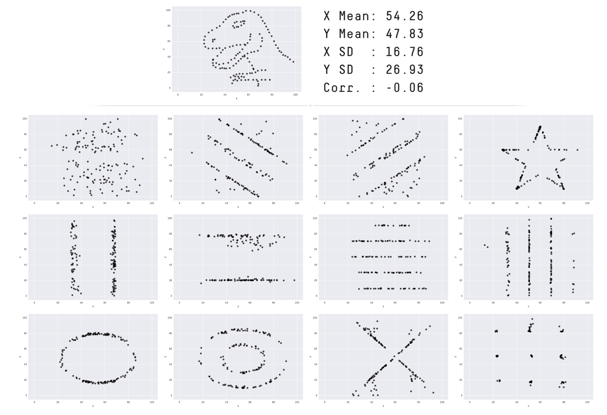

What Makes for Good Data Visualization?
Overview
What makes a good visualization? We want graphics to be eye catching and informative. In this chapter we’ll discuss different aspects that can affect the quality of your figures and specific considerations relevant to the geosciences.
The Importance of Data Visualization
Publication Ready Figures
The Problem with Rainbow Colormaps
Misleading Visualizations
Prerequisites
Concepts |
Importance |
Notes |
|---|---|---|
Necessary |
||
Necessary |
Time to learn: 10 minutes
import matplotlib as mpl
import matplotlib.pyplot as plt
import numpy as np
import geocat.viz as gv
The Importance of Data Visualization
It is important to use pictures to show data because we can visually detect patterns that could be lost in statistical analysis. All scientific disciplines use data visualizations to communicate concepts.
Here we have a figure from Autodesk that shows a “Datasaurus” and 12 other datasets that share the same statistical information (mean, standard deviation, etc). We can see immediately that visually are telling very different stories: be it a dinosaur, a star, an oval, concentric ovals, or a series of lines (perhaps weather fronts).
Publication Ready Figures
For your figure to be publication ready, you probably want to change some of Matplotlib’s default plotting settings: selecting font sizes for your titles and labels, changing figure sizes, or subplot/colormap layout.
To demonstrate this, let’s look at an example:
# fake data
x = [0, 1, 2, 3, 4, 5]
y = [0, 3, 6, 9, 12, 15]
# plot
plt.plot(x, y)
# annotate
plt.title('Title')
plt.xlabel('X Label')
plt.ylabel('Y Label')
plt.show();
Now let’s show some customization options:
# fake data
x = [0, 1, 2, 3, 4, 5]
y = [0, 3, 6, 9, 12, 15]
# plot
plt.plot(x, y, '--', color='red')
# annotate
plt.title('Title', fontsize=20)
plt.xlabel('X Label', fontsize=16)
plt.ylabel('Y Label', fontsize=16)
plt.show();
Matplotlib Global Parameters
Matplotlib has defaults for font sizes and all sorts of attributes of a plot. Instead of setting your fontsize in every script, it is possible to set global parameters to change the default values of these attributes.
You can veiw the globoal parameters options and their current settings with:
mpl.rcParams.keys
<bound method Mapping.keys of RcParams({'_internal.classic_mode': False,
'agg.path.chunksize': 0,
'animation.bitrate': -1,
'animation.codec': 'h264',
'animation.convert_args': ['-layers', 'OptimizePlus'],
'animation.convert_path': 'convert',
'animation.embed_limit': 20.0,
'animation.ffmpeg_args': [],
'animation.ffmpeg_path': 'ffmpeg',
'animation.frame_format': 'png',
'animation.html': 'none',
'animation.writer': 'ffmpeg',
'axes.autolimit_mode': 'data',
'axes.axisbelow': 'line',
'axes.edgecolor': 'black',
'axes.facecolor': 'white',
'axes.formatter.limits': [-5, 6],
'axes.formatter.min_exponent': 0,
'axes.formatter.offset_threshold': 4,
'axes.formatter.use_locale': False,
'axes.formatter.use_mathtext': False,
'axes.formatter.useoffset': True,
'axes.grid': False,
'axes.grid.axis': 'both',
'axes.grid.which': 'major',
'axes.labelcolor': 'black',
'axes.labelpad': 4.0,
'axes.labelsize': 'medium',
'axes.labelweight': 'normal',
'axes.linewidth': 0.8,
'axes.prop_cycle': cycler('color', ['#1f77b4', '#ff7f0e', '#2ca02c', '#d62728', '#9467bd', '#8c564b', '#e377c2', '#7f7f7f', '#bcbd22', '#17becf']),
'axes.spines.bottom': True,
'axes.spines.left': True,
'axes.spines.right': True,
'axes.spines.top': True,
'axes.titlecolor': 'auto',
'axes.titlelocation': 'center',
'axes.titlepad': 6.0,
'axes.titlesize': 'large',
'axes.titleweight': 'normal',
'axes.titley': None,
'axes.unicode_minus': True,
'axes.xmargin': 0.05,
'axes.ymargin': 0.05,
'axes.zmargin': 0.05,
'axes3d.automargin': False,
'axes3d.grid': True,
'axes3d.mouserotationstyle': 'arcball',
'axes3d.trackballborder': 0.2,
'axes3d.trackballsize': 0.667,
'axes3d.xaxis.panecolor': (0.95, 0.95, 0.95, 0.5),
'axes3d.yaxis.panecolor': (0.9, 0.9, 0.9, 0.5),
'axes3d.zaxis.panecolor': (0.925, 0.925, 0.925, 0.5),
'backend': 'module://matplotlib_inline.backend_inline',
'backend_fallback': True,
'boxplot.bootstrap': None,
'boxplot.boxprops.color': 'black',
'boxplot.boxprops.linestyle': '-',
'boxplot.boxprops.linewidth': 1.0,
'boxplot.capprops.color': 'black',
'boxplot.capprops.linestyle': '-',
'boxplot.capprops.linewidth': 1.0,
'boxplot.flierprops.color': 'black',
'boxplot.flierprops.linestyle': 'none',
'boxplot.flierprops.linewidth': 1.0,
'boxplot.flierprops.marker': 'o',
'boxplot.flierprops.markeredgecolor': 'black',
'boxplot.flierprops.markeredgewidth': 1.0,
'boxplot.flierprops.markerfacecolor': 'none',
'boxplot.flierprops.markersize': 6.0,
'boxplot.meanline': False,
'boxplot.meanprops.color': 'C2',
'boxplot.meanprops.linestyle': '--',
'boxplot.meanprops.linewidth': 1.0,
'boxplot.meanprops.marker': '^',
'boxplot.meanprops.markeredgecolor': 'C2',
'boxplot.meanprops.markerfacecolor': 'C2',
'boxplot.meanprops.markersize': 6.0,
'boxplot.medianprops.color': 'C1',
'boxplot.medianprops.linestyle': '-',
'boxplot.medianprops.linewidth': 1.0,
'boxplot.notch': False,
'boxplot.patchartist': False,
'boxplot.showbox': True,
'boxplot.showcaps': True,
'boxplot.showfliers': True,
'boxplot.showmeans': False,
'boxplot.vertical': True,
'boxplot.whiskerprops.color': 'black',
'boxplot.whiskerprops.linestyle': '-',
'boxplot.whiskerprops.linewidth': 1.0,
'boxplot.whiskers': 1.5,
'contour.algorithm': 'mpl2014',
'contour.corner_mask': True,
'contour.linewidth': None,
'contour.negative_linestyle': 'dashed',
'date.autoformatter.day': '%Y-%m-%d',
'date.autoformatter.hour': '%m-%d %H',
'date.autoformatter.microsecond': '%M:%S.%f',
'date.autoformatter.minute': '%d %H:%M',
'date.autoformatter.month': '%Y-%m',
'date.autoformatter.second': '%H:%M:%S',
'date.autoformatter.year': '%Y',
'date.converter': 'auto',
'date.epoch': '1970-01-01T00:00:00',
'date.interval_multiples': True,
'docstring.hardcopy': False,
'errorbar.capsize': 0.0,
'figure.autolayout': False,
'figure.constrained_layout.h_pad': 0.04167,
'figure.constrained_layout.hspace': 0.02,
'figure.constrained_layout.use': False,
'figure.constrained_layout.w_pad': 0.04167,
'figure.constrained_layout.wspace': 0.02,
'figure.dpi': 100.0,
'figure.edgecolor': 'white',
'figure.facecolor': 'white',
'figure.figsize': [6.4, 4.8],
'figure.frameon': True,
'figure.hooks': [],
'figure.labelsize': 'large',
'figure.labelweight': 'normal',
'figure.max_open_warning': 20,
'figure.raise_window': True,
'figure.subplot.bottom': 0.11,
'figure.subplot.hspace': 0.2,
'figure.subplot.left': 0.125,
'figure.subplot.right': 0.9,
'figure.subplot.top': 0.88,
'figure.subplot.wspace': 0.2,
'figure.titlesize': 'large',
'figure.titleweight': 'normal',
'font.cursive': ['Apple Chancery',
'Textile',
'Zapf Chancery',
'Sand',
'Script MT',
'Felipa',
'Comic Neue',
'Comic Sans MS',
'cursive'],
'font.family': ['sans-serif'],
'font.fantasy': ['Chicago',
'Charcoal',
'Impact',
'Western',
'xkcd script',
'fantasy'],
'font.monospace': ['DejaVu Sans Mono',
'Bitstream Vera Sans Mono',
'Computer Modern Typewriter',
'Andale Mono',
'Nimbus Mono L',
'Courier New',
'Courier',
'Fixed',
'Terminal',
'monospace'],
'font.sans-serif': ['DejaVu Sans',
'Bitstream Vera Sans',
'Computer Modern Sans Serif',
'Lucida Grande',
'Verdana',
'Geneva',
'Lucid',
'Arial',
'Helvetica',
'Avant Garde',
'sans-serif'],
'font.serif': ['DejaVu Serif',
'Bitstream Vera Serif',
'Computer Modern Roman',
'New Century Schoolbook',
'Century Schoolbook L',
'Utopia',
'ITC Bookman',
'Bookman',
'Nimbus Roman No9 L',
'Times New Roman',
'Times',
'Palatino',
'Charter',
'serif'],
'font.size': 10.0,
'font.stretch': 'normal',
'font.style': 'normal',
'font.variant': 'normal',
'font.weight': 'normal',
'grid.alpha': 1.0,
'grid.color': '#b0b0b0',
'grid.linestyle': '-',
'grid.linewidth': 0.8,
'hatch.color': 'black',
'hatch.linewidth': 1.0,
'hist.bins': 10,
'image.aspect': 'equal',
'image.cmap': 'viridis',
'image.composite_image': True,
'image.interpolation': 'auto',
'image.interpolation_stage': 'auto',
'image.lut': 256,
'image.origin': 'upper',
'image.resample': True,
'interactive': True,
'keymap.back': ['left', 'c', 'backspace', 'MouseButton.BACK'],
'keymap.copy': ['ctrl+c', 'cmd+c'],
'keymap.forward': ['right', 'v', 'MouseButton.FORWARD'],
'keymap.fullscreen': ['f', 'ctrl+f'],
'keymap.grid': ['g'],
'keymap.grid_minor': ['G'],
'keymap.help': ['f1'],
'keymap.home': ['h', 'r', 'home'],
'keymap.pan': ['p'],
'keymap.quit': ['ctrl+w', 'cmd+w', 'q'],
'keymap.quit_all': [],
'keymap.save': ['s', 'ctrl+s'],
'keymap.xscale': ['k', 'L'],
'keymap.yscale': ['l'],
'keymap.zoom': ['o'],
'legend.borderaxespad': 0.5,
'legend.borderpad': 0.4,
'legend.columnspacing': 2.0,
'legend.edgecolor': '0.8',
'legend.facecolor': 'inherit',
'legend.fancybox': True,
'legend.fontsize': 'medium',
'legend.framealpha': 0.8,
'legend.frameon': True,
'legend.handleheight': 0.7,
'legend.handlelength': 2.0,
'legend.handletextpad': 0.8,
'legend.labelcolor': 'None',
'legend.labelspacing': 0.5,
'legend.loc': 'best',
'legend.markerscale': 1.0,
'legend.numpoints': 1,
'legend.scatterpoints': 1,
'legend.shadow': False,
'legend.title_fontsize': None,
'lines.antialiased': True,
'lines.color': 'C0',
'lines.dash_capstyle': <CapStyle.butt: 'butt'>,
'lines.dash_joinstyle': <JoinStyle.round: 'round'>,
'lines.dashdot_pattern': [6.4, 1.6, 1.0, 1.6],
'lines.dashed_pattern': [3.7, 1.6],
'lines.dotted_pattern': [1.0, 1.65],
'lines.linestyle': '-',
'lines.linewidth': 1.5,
'lines.marker': 'None',
'lines.markeredgecolor': 'auto',
'lines.markeredgewidth': 1.0,
'lines.markerfacecolor': 'auto',
'lines.markersize': 6.0,
'lines.scale_dashes': True,
'lines.solid_capstyle': <CapStyle.projecting: 'projecting'>,
'lines.solid_joinstyle': <JoinStyle.round: 'round'>,
'macosx.window_mode': 'system',
'markers.fillstyle': 'full',
'mathtext.bf': 'sans:bold',
'mathtext.bfit': 'sans:italic:bold',
'mathtext.cal': 'cursive',
'mathtext.default': 'it',
'mathtext.fallback': 'cm',
'mathtext.fontset': 'dejavusans',
'mathtext.it': 'sans:italic',
'mathtext.rm': 'sans',
'mathtext.sf': 'sans',
'mathtext.tt': 'monospace',
'patch.antialiased': True,
'patch.edgecolor': 'black',
'patch.facecolor': 'C0',
'patch.force_edgecolor': False,
'patch.linewidth': 1.0,
'path.effects': [],
'path.simplify': True,
'path.simplify_threshold': 0.111111111111,
'path.sketch': None,
'path.snap': True,
'pcolor.shading': 'auto',
'pcolormesh.snap': True,
'pdf.compression': 6,
'pdf.fonttype': 3,
'pdf.inheritcolor': False,
'pdf.use14corefonts': False,
'pgf.preamble': '',
'pgf.rcfonts': True,
'pgf.texsystem': 'xelatex',
'polaraxes.grid': True,
'ps.distiller.res': 6000,
'ps.fonttype': 3,
'ps.papersize': 'letter',
'ps.useafm': False,
'ps.usedistiller': None,
'savefig.bbox': None,
'savefig.directory': '~',
'savefig.dpi': 'figure',
'savefig.edgecolor': 'auto',
'savefig.facecolor': 'auto',
'savefig.format': 'png',
'savefig.orientation': 'portrait',
'savefig.pad_inches': 0.1,
'savefig.transparent': False,
'scatter.edgecolors': 'face',
'scatter.marker': 'o',
'svg.fonttype': 'path',
'svg.hashsalt': None,
'svg.id': None,
'svg.image_inline': True,
'text.antialiased': True,
'text.color': 'black',
'text.hinting': 'force_autohint',
'text.hinting_factor': 8,
'text.kerning_factor': 0,
'text.latex.preamble': '',
'text.parse_math': True,
'text.usetex': False,
'timezone': 'UTC',
'tk.window_focus': False,
'toolbar': 'toolbar2',
'webagg.address': '127.0.0.1',
'webagg.open_in_browser': True,
'webagg.port': 8988,
'webagg.port_retries': 50,
'xaxis.labellocation': 'center',
'xtick.alignment': 'center',
'xtick.bottom': True,
'xtick.color': 'black',
'xtick.direction': 'out',
'xtick.labelbottom': True,
'xtick.labelcolor': 'inherit',
'xtick.labelsize': 'medium',
'xtick.labeltop': False,
'xtick.major.bottom': True,
'xtick.major.pad': 3.5,
'xtick.major.size': 3.5,
'xtick.major.top': True,
'xtick.major.width': 0.8,
'xtick.minor.bottom': True,
'xtick.minor.ndivs': 'auto',
'xtick.minor.pad': 3.4,
'xtick.minor.size': 2.0,
'xtick.minor.top': True,
'xtick.minor.visible': False,
'xtick.minor.width': 0.6,
'xtick.top': False,
'yaxis.labellocation': 'center',
'ytick.alignment': 'center_baseline',
'ytick.color': 'black',
'ytick.direction': 'out',
'ytick.labelcolor': 'inherit',
'ytick.labelleft': True,
'ytick.labelright': False,
'ytick.labelsize': 'medium',
'ytick.left': True,
'ytick.major.left': True,
'ytick.major.pad': 3.5,
'ytick.major.right': True,
'ytick.major.size': 3.5,
'ytick.major.width': 0.8,
'ytick.minor.left': True,
'ytick.minor.ndivs': 'auto',
'ytick.minor.pad': 3.4,
'ytick.minor.right': True,
'ytick.minor.size': 2.0,
'ytick.minor.visible': False,
'ytick.minor.width': 0.6,
'ytick.right': False})>
To change any given parameter you would use the following command (replacing your parameter and value, of course):
mpl.rcParams['font.family'] = 'Arial'
Using GeoCAT-viz
The GeoCAT-viz package also has many utility functions for making your plots looks publication ready in fewer lines of code. The defaults of GeoCAT-viz keyword-arguments are set to resemble the style of NCL.
# fake data
x = [0, 1, 2, 3, 4, 5]
y = [0, 3, 6, 9, 12, 15]
# plot
plt.plot(x, y)
# annotate
plt.title('Title')
plt.xlabel('X Label')
plt.ylabel('Y Label')
gv.set_titles_and_labels(plt.gca())
plt.show();
The Problem with Rainbow Colormaps
Rainbow colormaps are visually beautiful, but are falling out of favor because
They are not colorblind friendly and
They do not print out in grayscale in a meaningful way.
Both of these issues can be addressed by being careful about your colormaps lightness-values.
Some colormaps options are perceptually uniform (the same lightness value), sequentially ordered (goes from lighter to darker), or diverging (lightest or darkest at a set point and uniformly changes lightness going out). A rainbow colormap however is lighter or darker in arbitrary places and it affects how we interpret data (especially if it was printed out in grayscale).
For example, from Matplotlib’s Choosing a Colormap documentation here are some “good” colormaps:

And here are miscellaneous colormaps:

Looking at the colors in grayscale helps to understand why we might prefer a sequentially ordered colormap. Some grayscale values are duplicated and the reader will not know if it is a high or low value.
Another consideration that can help those who are visually impaired is to make sure your figure captions are descriptive. Use words to paint a picture of what is displayed, not just the conclusions you want the reader to reach.
Misleading Visualizations
The scales or colors we choose to use for data visualization affect how people interpret figures. You should strive to make your visualizations as accurate and as informative as possible. Here are some examples that demonstrate just how different a figure can look based on these choices you make. Do not intentionally mislead your audience!
Perhaps the most common data visualization manipulation is to change the Y-scale. If a plot does not begin at 0, small changes in magnitude can be exaggerated. Similarly a logarithmic scale will amplify changes. This is not always disingenuous, sometimes these changes are what you want to highlight, the pattern you want to draw attention to. Just make sure it is appropriate for your use case and documented. Alternatively, extending the Y-axis too large has the opposite affect and smooths out the differences in data.
x = [1, 2, 3, 4, 5]
y = [1101, 1011, 1111, 1070, 1050]
fig, (ax1, ax2, ax3, ax4) = plt.subplots(4)
fig.tight_layout()
ax1.bar(x,y)
ax1.set_title("Default Y-Scale Starts at 0")
ax2.bar(x,y)
ax2.set_ylim(1000)
ax2.set_title("Y-Scale Starts at 1000")
ax3.bar(x,y)
ax3.set_yscale("log")
ax3.set_title("Y-Scale is Logarithmic");
ax4.bar(x,y)
ax4.set_ylim(0, 2000)
ax4.set_title("Y-Scale is Extended");
Other examples of data visualization manipulation include improper scaling, cherry picking a small non-representative subset of the data to display, displaying pie charts at a slant (pie charts are hard to interpet as is), and using unexpected colormaps.
Summary
It is important to have accurate, engaging, and representative data visualization to accumpany your research, both for data exploration as part of the scientific process, for communication of results, and education/outreach efforts. Visually we pick up on patterns that statistics alone may not convey. However, an over reliance on data visualization can make science less accessible to those with vision disabilities. It is important to be cognizant of the patterns our minds pick up, be it based on color or y-axis scaling, so that we can avoid misleading our audience and more accurately convey the narrative inherent to the data.
What’s next?
Let’s break down the different components of data visualization in Plot Elements.
Resources and references
Alberto Cairo’s How Charts Lie: Getting Smarter about Visual Information